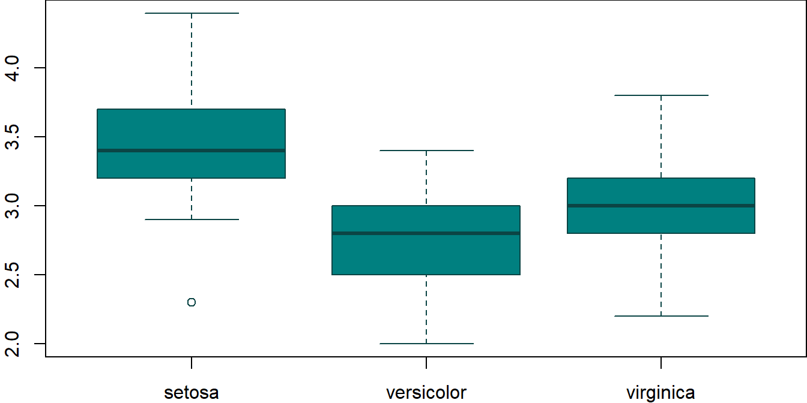

Program Evaluation (Applied Econometrics) Tools Workshop using STATA and R
Zahid Asghar ![]()
Introduction
This training workshop is designed to focus on research design, thinking clearly with data with real life data applications through computer-based exercises and learn to reproduce the econometric results of published economic articles like Card (Nobel Laureate) and Krueger (1994). Philosophy of the course will be to enable participants in doing economics. Main software for the course will be R, and STATA with programs will also be provided for many of the topics. This course will
Objectives
Emphasis on understanding problem solving techniques, rather than mathematical theorems and complex proofs
Developing a learning community to improve statistical and econometric skills necessary in the study of economics.
Some of the resources to be used for this course and freely available are listed as follows:
Results

Maybe you want to show off some of that fancy code you spent so much time on to make that figure, well you can do that too! Just use the echo=TRUE option in the r code chunk options, Figure @ref(fig:myprettycode)!

How about a neat table of data? See, Table @ref(tab:iristable):
| Sepal Length |
Sepal Width |
Petal Length |
Petal Width |
Species |
|---|---|---|---|---|
| 5.1 | 3.5 | 1.4 | 0.2 | setosa |
| 4.9 | 3.0 | 1.4 | 0.2 | setosa |
| 4.7 | 3.2 | 1.3 | 0.2 | setosa |
| 4.6 | 3.1 | 1.5 | 0.2 | setosa |
| 5.0 | 3.6 | 1.4 | 0.2 | setosa |
| 5.4 | 3.9 | 1.7 | 0.4 | setosa |
| 4.6 | 3.4 | 1.4 | 0.3 | setosa |
| 5.0 | 3.4 | 1.5 | 0.2 | setosa |